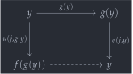
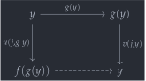
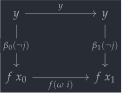
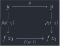
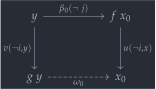
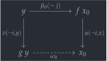
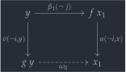
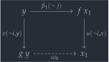
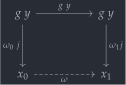
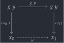

open import 1Lab.HLevel open import 1Lab.Equiv open import 1Lab.Path open import 1Lab.Type module 1Lab.Equiv.FromPath {ℓ} (P : (i : I) → Type ℓ) where
Equivs from Paths🔗
In Cubical Type Theory: a
constructive interpretation of the univalence axiom, Cohen et. al.
give a direct cubical construction of an equivalence
A ≃ B from a path A ≡ B. This is in contrast
with the indirect definition, transporting the identity
equivalence along the path:
private badPathToEquiv : P i0 ≃ P i1 badPathToEquiv = transport (λ i → P i0 ≃ P i) (id , id-equiv)
While is-equiv is a proposition – and thus the particular proof does not matter propositionally – Agda is still a programming language, so we still need to evaluate the proof. Cohen et. al.’s construction gives a much shorter normal form for line→equiv.
private ~P : (i : I) → Type ℓ ~P = λ i → P (~ i) A B : Type ℓ A = P i0 B = P i1
The construction begins by giving the endpoints of P – and the inverse of P – better names. We do the same for transports along P and ~P:
f : A → B f x = coe0→1 P x g : B → A g y = coe1→0 P y
Since f and g are defined by coercion along a path, we can define fillers u and v connecting f (resp g) to the identity function, over P:
u : PathP (λ i → A → P i) id f u i x = coe0→i P i x v : PathP (λ i → B → P i) g id v i y = coe1→i P i y
To prove that f is an equivalence, by definition, it must have contractible fibres. It suffices to show that the fibre over y is inhabited, and that the fibre over y is a proposition.
To prove that the
fibre
over y is inhabited, we take g y to be the
preimage, and prove that there is a path f (g y) ≡ y, as we
are required to do. For this, we use the “lid” (the dotted face) of the
square below (this is the
comp
term):
 

hasFib : (y : B) → fibre f y hasFib y .fst = g y hasFib y .snd i = comp P (λ j → λ { (i = i1) → v j y ; (i = i0) → u j (g y) }) (g y)
To prove that the fibre over y is propositional, there is significantly more work involved. Especially since all of the paths involved are dependent, and thus none of the path operations (especially sym!) apply. We begin by stating the types of what we’re going to construct:
fibProp : (y : B) → is-prop (fibre f y) fibProp y (x₀ , β₀) (x₁ , β₁) k = ω k , λ j → δ k (~ j) where ω : x₀ ≡ x₁ δ : Square refl (sym β₀) (sym β₁) (ap f ω)
While
ω
is a line,
δ
is a square. Namely, by looking at its type, we see that its
boundary is the square below. Observe that it is essentially a path
β₀ ≡ β₁, lying over ω, which is exactly what
we need to equate the fibres:
 

As an intermediate step in the construction of δ, we construct θ. However, that is also hard to do directly, so we have four (really, two) more intermediate steps: ω₀/θ₀ and ω₁/θ₁.
The line ω₀ is the dashed line in the composition below, and θ₀ is the square itself. The type of θ₀ is hard to look at, so focus on the diagram: It connects β₀ and ω₀, in the vertical direction.
 

square : A → ∀ j i → PartialP (~ j ∨ j) (λ _ → P (~ i)) square x j i (j = i0) = v (~ i) y square x j i (j = i1) = u (~ i) x ω₀ : g y ≡ x₀ ω₀ j = comp ~P (square x₀ j) (β₀ (~ j)) θ₀ : SquareP (λ i j → P (~ j)) (sym β₀) (λ i → v (~ i) y) (λ i → u (~ i) x₀) ω₀ θ₀ j i = fill ~P (square x₀ j) (inS (β₀ (~ j))) i
Analogously, we have ω₁ and θ₁ connecting β₁ and that, as the dashed line and filler of the square below:
 

ω₁ : g y ≡ x₁ ω₁ j = comp ~P (square x₁ j) (β₁ (~ j)) θ₁ : SquareP (λ i j → P (~ j)) (sym β₁) (λ i → v (~ i) y) (λ i → u (~ i) x₁) ω₁ θ₁ j i = fill ~P (square x₁ j) (inS (β₁ (~ j))) i
Now, we are almost done. Like a magic trick, the paths
ω₀ and
ω₁
we constructed above to aid in proving
δ
assemble to give a complete proof of
ω,
as the dashed line in the square below:
 

sys : (k j : I) → _ sys k j (k = i0) = ω₀ j sys k j (k = i1) = ω₁ j ω k = hcomp (sys k) (g y) θ : Square refl ω₀ ω₁ ω θ k = hfill (sys k) (inS (g y))
We also have
θ,
which is the filler of the above square - i.e., it is a path connecting
ω₀ and
ω₁.
Now we can finally assemble
δ.
Since we are constructing a square, we are filling a cube,
i.e. a path of paths of paths! The “full” face of this cube is given by
θ,
which indicates the boundaries of the other faces. The full cube is
right after the definition:
δ k j = comp P (λ i → λ { (j = i0) → v i y ; (k = i0) → θ₀ j (~ i) ; (j = i1) → u i (ω k) ; (k = i1) → θ₁ j (~ i) }) (θ k j)
The idea behind the diagram is to piece together the three squares we
have constructed,
θ,
θ₀
and
θ₁,
with the intent of getting a composite β₀ ≡ β₁. The
purpleish square behind is
θ;
The brownish square in front is
δ.
Finally, putting together the
proof of inhabitation
and the
proof of propositionality,
we get the desired:
f
is an equivalence.
line→is-equiv : is-equiv f line→is-equiv .is-eqv y .centre = hasFib y line→is-equiv .is-eqv y .paths = fibProp y _ line→equiv : A ≃ B line→equiv .fst = f line→equiv .snd = line→is-equiv